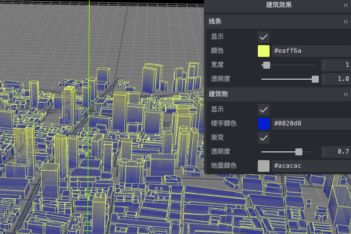

Vue3 Digital Twin
A Three.js and Vue 3 experiment library covering digital cities, industrial visualization, shaders, post-processing, GIS, particles, materials, and scene interaction.
I am Lucas (Yuyan) Shen, a technical artist and developer working across DCC tools, rigging, web graphics, and interactive systems.

Two earlier web projects, preserved here as snapshots of different stages in my development practice.
A Three.js and Vue 3 experiment library covering digital cities, industrial visualization, shaders, post-processing, GIS, particles, materials, and scene interaction.
An early Vue 2 information-management course project. The repository contains an Element UI login flow, form validation, API authentication, token storage, and route protection.